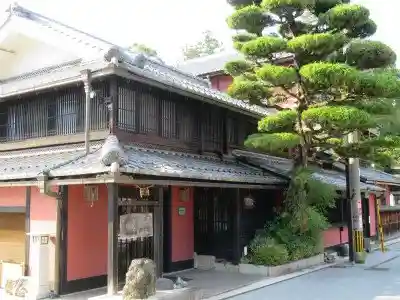
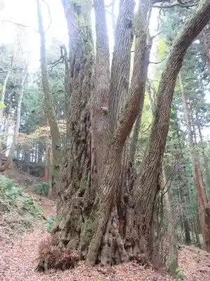
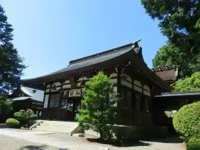
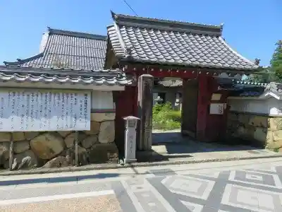

Kagi Ro
Taga, Shiga · 0749-48-1003 · Official / source link

Ido Shrine
Taga, Shiga · 0749-48-1553 · Official / source link

Ko Miya Shrine
Taga, Shiga · 0749-48-1553 · Official / source link

Shinnyo Tera
Taga, Shiga · 0749-48-0507 · Official / source link

Akebo no Park Taga
Taga, Shiga · 0749-48-2077 · Official / source link
Asutoro Park Ten Kyu Kan
Taga, Shiga · 0749-48-1820 · Official / source link
Otaki Shrine
Taga, Shiga · 0749-48-1553 · Official / source link
Kirimbiiru Shiga Kojo / Kirimbibarejji Shiga Kojo
Taga, Shiga · 0749-48-2810 · Official / source link
Taga Taisha
Taga, Shiga · Official / source link
Kawauchi no Kazana
Taga, Shiga · 0749-48-0552 · Official / source link
Takatori Yama Fureai Park
Taga, Shiga · 0749-49-0635 · Official / source link
Otaki no Tsuriba
Taga, Shiga · 077-522-0126 · Official / source link
Kyutoku Joshi
Taga, Shiga · 0749-48-1553 · Official / source link
Taka Gen Tera
Taga, Shiga · 0749-49-0821 · Official / source link
Enmei Jizo Mikoto
Taga, Shiga · Official / source link
Narasaki Burial Mound
Taga, Shiga · Official / source link
Iimori Ki
Taga, Shiga · Official / source link
Ooka Burial Mound
Taga, Shiga · Official / source link
Taga Taisha Omotesando Ema Tori
Taga, Shiga · Official / source link
Inukami Shrine (Taga)
Taga, Shiga · Official / source link
Omitetsudo Taga Taisha Zen'eki
Taga, Shiga · 0749-22-3303 · Official / source link
Jube Yashikiato
Taga, Shiga · 0749-48-1553 · Official / source link
Ketsu I no Mori Park
Taga, Shiga · Official / source link
Taga Town Hall
Taga, Shiga · 0749-48-8111 · Official / source link